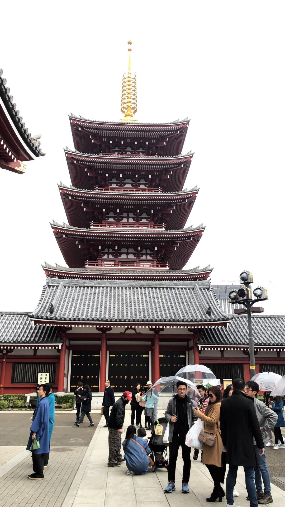

Mouse over to see more info
What to Pack
- DLSR camera (canon or nikon)
- International License
- Backpack
- Wallet with yen
- Jeans
- Sneakers
- Jacket
- Sweaters and T-shirts
- Phone chargers
- Purse
- Sunglasses
- Comfortable clothes
- Map of the city
- Earphones
Things to Do
- MariCar:
This is hands down one of the best excersions you can do in Tokyo! If you have a license, you can do it. The tour is a 2.5-3 hour go-kart ride through the city of Tokyo dressed as your favorite movie characters.Mousetip 1 - Shibuya Street Crossing:
This is the world's largest street crossing! It is known for it's scramble crossing and has been featured in various movies.Mousetip 2 - Sensō-ji Temple:
Sensō-ji is an ancient Buddhist temple located in Asakusa, Tokyo, Japan. It is Tokyo's oldest temple, and one of its most significant.Mousetip 3 - teamLab Borderless - Digital Art Museum:
teamLab Borderless is a group of artworks that form one borderless world. Artworks move out of the rooms freely form connections and relationships with people, communicate with other works, influence each other.Mousetip 4
Where to Stay
- Hotel:
Shangri-La Tokyo (LUXURY) Mousetip 1 - Hotel:
Conrad Tokyo (LUXURY) Mousetip 2
My family's trip to Japan was one for the books! There is so much to do, especially in Tokyo. My suggestions are only half of what Tokyo has to offer, but I highly recommend all the excersions I have written above. Just to add on, some of the best restaurants in the world are in Tokyo, but it is a lot of sushi! The shopping in Tokyo is also very good but can get pricey so it's important to find native Japanese boutiques.